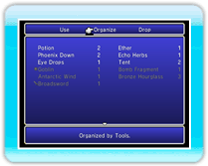

15 |
Menu / Items (Oggetti) |
 |
|
Questo menu ti consente di gestire gli oggetti ottenuti nel corso dell'avventura. Per prima cosa seleziona "Use" (Usa), "Organize" (Organizza) o "Drop" (Scarta) nel menu superiore. Dopo aver selezionato "Use" o "Drop", tieni premuto 
● Use (Usa)Seleziona un oggetto visualizzato in bianco e premi due volte

● Organize (Organizza)Con questa opzione puoi organizzare l'inventario come preferisci. Ogni volta che selezioni "Organize", l'inventario viene riordinato mostrando prima gli oggetti, le armi o le protezioni.

● Drop (Scarta)Usa questa opzione per sbarazzarti degli oggetti. Basta selezionare un oggetto e premere due volte |
 |
 |
 |